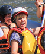

Our goal is to provide funny experiences and give happy moments to our customers by having a good family time. We have been providing great experiences for over 20 years. We have a experienced team to guide and provide all the tools you need to enjoy our services.